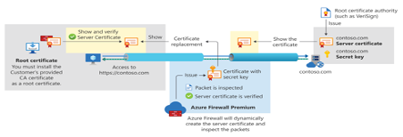
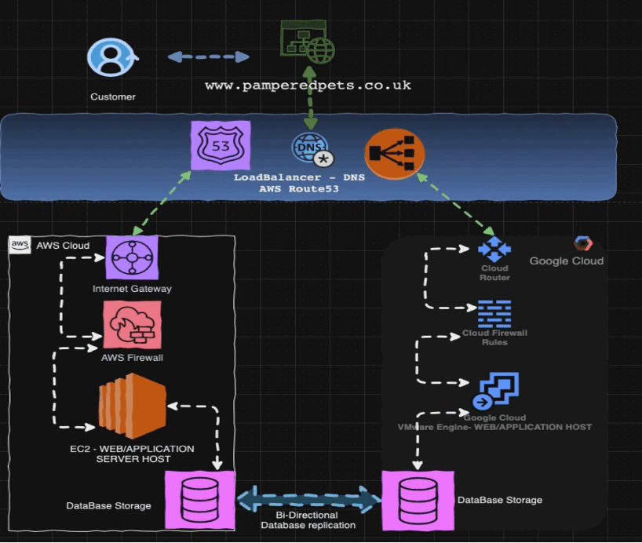
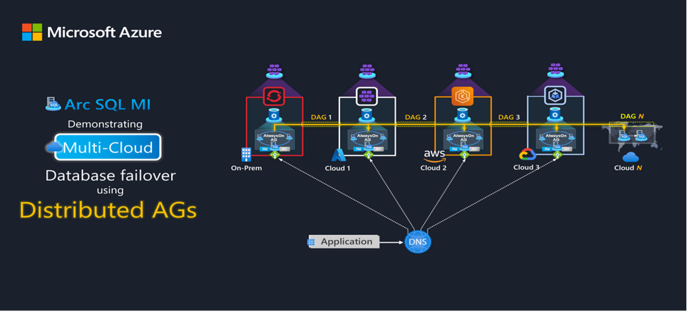

Unit 11: Executive Summary Report For Pampered Pets Business
Executive Summary Report for Pampered Pets
Introduction:
Despite the countless benefits that digital transformation brings to the table, it is a double-edged sword when it comes to the side effects that come with all these advantages.
While risk can exist at any retail establishment like physical stores, business owners need to define these risks and take necessary countermeasures to protect their businesses, employees, and assets. Digital transformation adds a layer of risk that accompanies the business and can dictate its success or failure. Putting a business into the digital realm of the internet can have its pros and cons, which also widens the attack surface and increases the risk of business impact.
Security risks on product quality, particularly in the context of digital transformation and modern supply chains, can be significant. These risks are often tied to vulnerabilities in the digital systems that manage, monitor, and control production processes.
In June 2017, Maersk was hit by the NotPetya ransomware attack, which severely disrupted its operations. The attack caused widespread delays in shipping and container tracking, forcing Maersk to temporarily shut down its IT systems to prevent further damage. One of the largest shipping companies in the world suffered a severe ransomware attack from the NotPetya malware. This attack affected its global operations, disabling over 40,000 devices and disrupting its supply chain, costing Maersk an estimated $250 million in lost revenue. This incident highlighted the vulnerabilities of international supply chains to cyberattacks and the importance of resilience in mitigating such risks. (Ed Martin, 2019)
In 2023, Indigo Books & Music, Canada’s bookstore chain, suffered a ransomware attack that forced the company to shut down its website and only accept cash payments in physical stores. The incident also led to delays in online orders, as their systems were compromised, and there was concern over potential customer data breaches. The attack highlighted vulnerabilities in their online operations, directly affecting their ability to deliver products and maintain quality service to customers, especially for retailers reliant on digital sales platforms. (Solomon H., 2023)
Risk Modelling:
1. Monte Carlo Simulation:
An effective risk modelling tool for Pampered Pets business, particularly due to the uncertainty and complexity involved in managing an international supply chain and implementing automation in warehouses. The business faces multiple uncertainties, from cybersecurity risks to supply chain delays and equipment failures, all of which can have significant impacts on product quality and availability.
MCS enables the Pampered Pets team to quantify these uncertainties by simulating thousands of possible scenarios based on randomized inputs, providing a probability distribution of outcomes. This approach allows for a better understanding of the likelihood and impact of various risks, offering more informed decision-making for risk mitigation (Spears & Barki, 2010).
Moreover, MCS helps Pampered Pets deal with the interdependencies within the supply chain, such as the cascading effects of a delay at one supplier or a system failure in an automated warehouse. The ability to aggregate multiple risks and model their combined effects makes Monte Carlo ideal for addressing complex supply chain dynamics. By providing a range of potential outcomes rather than a single deterministic result, it also offers a clearer view of the worst-case scenarios Pampered Pets needs to avoid. (AIRMIC, 2010)
Another advantage of using MCS is its support for sensitivity testing and scenario analysis. The Pampered Pets team can run "what-if" scenarios to explore how different variables (e.g., higher probability of cybersecurity threats due to digitalization) affect the overall risk profile. This aligns well with a systemic perspective on risk management, where interconnections between risks and digitalization processes are recognized, and helps the business remain agile in its risk mitigation strategies (Renn, Beier & Schweizer, 2021).
Lastly, Monte Carlo simulation also aligns with frameworks like ISO 31000 and risk quantification models such as Open FAIR, which advocate for systematic approaches to risk assessment, providing Pampered Pets with a structured method to manage the digital and operational risks that accompany the modernization of its supply chain (Josey, Hietala & Jones, 2018).
Risk Analysis Report Based on Monte Carlo Simulation:
By leveraging MCS, we calculated probabilistic risk analysis that can be faced by Pampered Pets. This can help in making more informed decisions about risk management in the rapidly digitalized and globally distributed supply chain. (Spears & Barki, 2010; Renn, Beier, & Schweizer, 2021)
Below is the calculation for random numbers that were run 1,000 times to create an analysis for probable risks based on the variables listed as quality and availability of products:
- If the random value falls within a certain range (e.g., 0 to 0.05 for a 5% chance), it results in a "Critical Failure."
- If the random value falls within the next range (e.g., 0.05 to 0.15 for a 10% chance), it results in a "Moderate Issue".
- If the random value is greater than 0.15 (for the remaining 85%), it results in "No Issue."
| Outcome | Count | Probability (%) |
|---|---|---|
| Critical Failure in Quality | 54 | 5.4 |
| Moderate Issue in Quality | 112 | 11.2 |
| No Issue in Quality | 834 | 83.4 |
| Major Disruption in Availability | 84 | 8.4 |
| Moderate Delay in Availability | 119 | 11.9 |
| No Issue in Availability | 797 | 79.7 |
| Both Critical | 6 | 0.6 |
| Both Moderate | 11 | 1.1 |
| No Combined Issue | 983 | 98.3 |
Using Value-Focused Risk Modelling
On the other hand, we used the Multi-Criteria Decision Making (MCDM) value-focused approach to help Pampered Pets make strategic business decisions that align with the core values of the business and provide a more holistic view of supply chain risks. This approach doesn't just calculate probabilities and impacts but also considers the broader business context and objectives. This makes it particularly effective in complex environments like Pampered Pets, where there are both operational risks (such as warehouse automation failures) and reputational risks (such as product quality degradation).
Digitalization can introduce significant risks, but it also opens opportunities for businesses to become more resilient and efficient. The value-focused approach aligns well with these dynamics, as it allows Pampered Pets to address the dual challenge of managing risks while leveraging digital opportunities. (Renn, Beier, & Schweizer, 2021)
Risk Category
Risk Category | Sub-Risk | Probability (1-5) | Impact (1-5) | Risk Exposure | Monetary Impact (GBP) | Mitigation Strategy | Cost of Mitigation (GBP) | Mitigation Effective? | Priority Ranking
| Risk Category | Sub-Risk | Probability (1-5) | Impact (1-5) | Risk Exposure | Monetary Impact (GBP) | Mitigation Strategy | Cost of Mitigation (GBP) | Mitigation Effective? | Priority Ranking |
|---|---|---|---|---|---|---|---|---|---|
| Supplier Reliability Issues | Single supplier dependency | 4 | 5 | 20 | 500,000 | Supplier diversification, backup suppliers | 200,000 | Yes | 1 |
| Cybersecurity Breach | Data breach | 3 | 5 | 15 | 1,000,000 | Upgrade cybersecurity, regular audits | 400,000 | Yes | 2 |
| Cybersecurity Breach | System hacking | 2 | 4 | 8 | 800,000 | Advanced encryption, secure firewalls | 300,000 | Yes | 4 |
| Equipment Failure | Warehouse automation breakdown | 2 | 4 | 8 | 250,000 | Preventative maintenance, system redundancy | 100,000 | Yes | 4 |
| Transportation Delays | International shipping delays | 4 | 3 | 12 | 300,000 | Multiple shipping partners, route optimization | 150,000 | Yes | 3 |

Based on the analysis above, it is highly recommended to create a plan to mitigate these risks as a part of the risk avoidance plan, which should be as listed below:
1. Supplier diversification, backup suppliers
By having a backup supplier, you can mitigate the impact of such events and maintain a steady supply of resources, avoiding delays in production and fulfilling your customers’ orders on time. Quality issues with your primary supplier’s products can also arise, leading to compromised goods or even recalls. Having a backup supplier allows you to promptly switch to an alternative source that meets your quality standards, ensuring that you can continue providing your customers with high-quality products without compromising their satisfaction. (Dicky S., 2023)
2. Upgrade cybersecurity, regular audits:
According to (ISO 22301, 2024):
- Monitoring and Review: Implement mechanisms to continuously monitor cybersecurity threats and the effectiveness of business continuity measures. Conduct regular reviews, audits, and updates to the business continuity management system (BCMS) to ensure ongoing resilience. Use advanced monitoring tools to detect and respond to threats in real-time.
- Compliance Audits: Perform regular compliance audits to ensure that all business continuity and cybersecurity measures meet ISO 22301 standards and other relevant regulations. Use the findings from these audits to improve and update your policies and procedures continually.
3. Advanced encryption, secure firewalls
Data sovereignty under GDPR emphasizes that data protection laws apply based on the location of the data subject, not the data processor. Companies must implement security measures, such as encryption and access controls. On the other hand, the integrity and confidentiality in business must be ensured for personal data by applying measures such as encryption by utilizing secure connection from client to server with protocols like TLS/SSL and valid public certificates to ensure the use of secure protocols over the internet, whether hosting servers were on premises or in the cloud. (Palo Alto Networks, N.D.)
Example diagram: Below is an example of a Cloud Firewall with a client-to-server encrypted connection with TLS Inspection features, which also complies with PCI DSS environments (Microsoft, 2023):
4. Preventative maintenance, system redundancy
Network redundancy uses duplicate systems, connections, or paths in a network to ensure that if one component fails, another is available to take its place. This requires additional hardware, software, or connections to provide backup and failover capabilities in case of a network outage. (Inseego, N.D.)
This can be achieved in different environments of Cloud that can achieve redundancy. An example of public cloud redundancy would be the “Multicloud” approach, which according to (Custer C., 2023), can help in the following:
- Reducing IT infrastructure cost.
- Avoiding vendor lock-in.
- Increasing reliability by reducing single points of failure.
- Data protection and regulatory compliance.
5. Multiple shipping partners, route optimization
Having multiple shipping partners achieves redundancy and reduces dependency on single points of failure. A practical example of a company successfully using multiple shipping partners is Amazon. They have a network of shipping partners, including major players like UPS, FedEx, USPS, and regional logistics providers, to ensure fast and efficient deliveries. This avoids delays caused by any single carrier’s issues, optimizes delivery routes, and offers competitive shipping rates.
This multi-partner strategy allows Amazon to handle fluctuating demand while ensuring reliable delivery, even during peak seasons or logistical disruptions. (Mintsoft, 2021)
Disaster Recovery and Business Continuity
To fulfil the requirements for designing a business continuity and disaster recovery strategy to ensure the business’s online presence won’t be impacted or the impact is minimized, and to ensure online availability 24/7/365 with less than a 1-minute changeover window, the following is highly recommended:
- Highly Available Multi-Region Architecture (Active-Active) 
- Multi-cloud design with Global Load Balancer: This works with DNS (Domain Name System) to www.pamperedpets.co.uk, which resolves to different public IP addresses that are multi-homed on different Cloud Providers.
It is recommended to have a design that incorporates Platform As A Service (PaaS). This eliminates the need for on-premises hardware and increases availability by using a multi-cloud solution with different Cloud service Providers. This setup will improve online presence availability and speed of access by using load balancing services like the Route53 DNS service by AWS, which allows for redundancy and load balancing traffic toward servers.
This design works as Active-Active Cloud Data Centres, which is a Disaster Recovery as a Service (DRaaS) solution that achieves a recovery time objective (RPO) of 1 minute.
To calculate the RPO, the following time objects are considered:
- RTO = Detection Time + Failover Time + Recovery Time + Validation Time
- RTO = 10 Seconds + 20 Seconds + 15 Seconds + 15 Seconds = 60 Seconds
In an active-active cloud solution, databases should be replicated in real-time (continuously) or at least every few seconds (depending on the RPO). For highly critical applications where data loss is not acceptable, continuous replication is the best choice. If some minor data loss is tolerable, asynchronous replication with intervals of a few seconds can work.
Design A: ACTIVE-ACTIVE Multi-Cloud with Database replication
(Diagram source: created with https://draw.io)
Design B:
A more expensive design can incorporate more cloud service providers to be available as backup and disaster recovery centers. For example, Microsoft Azure’s Arc SQL MI enables a degree of high availability/disaster recovery (HA/DR) that is unachievable within a single Cloud vendor. (Rahman R., 2021)
GDPR Compliance:
In order for these designs to be compliant with GDPR, the following must be followed:
- Data is stored and processed in EU data centers, or appropriate legal safeguards (SCCs, BCRs) are in place for cross-border transfers.
- Encryption, access control, and security measures are implemented in line with Article 32. (GDPR, N. D.)
- Personal data rights (access, erasure) are respected, and breach notification protocols are established.
In addition, the following major cloud service providers offer GDPR compliant services:
- AWS GDPR Center – Guidelines on how AWS services comply with GDPR. (Amazon, N.D.)
- Microsoft GDPR Commitment – Azure’s compliance and services to meet GDPR. (Microsoft, N.D.)
- Google Cloud & the General Data Protection Regulation (GDPR). (Google Cloud, N.D.)
Summary
In summary, the risk modeling conducted for Pampered Pets business highlights critical vulnerabilities within the supply chain and operational processes, emphasizing the need for robust mitigation strategies. Implementing disaster recovery (DR) and business continuity (BC) plans is essential to ensure that the organization can swiftly recover from disruptions and maintain service availability. By addressing potential risks proactively, Pampered Pets can safeguard product quality and enhance resilience against unforeseen challenges, ultimately ensuring the continued trust of high-profile clients. This comprehensive approach not only protects the business but also supports sustainable growth in a competitive market.
References:
Renn, O., Beier, G., & Schweizer, P.-J. (2021). The opportunities and risks of digitalisation for sustainable development: a systemic perspective. Available from: https://www.researchgate.net/publication/350494384_The_opportunities_and_risks_of_digitalisation_for_sustainable_development_a_systemic_perspective [Accessed 13th October 2024].
Martin, E. (2019). Protect and survive: how Maersk learned from the NotPetya cyber attack. Available from: https://www.rivieramm.com/news-content-hub/news-content-hub/protect-and-survive-how-maersk-learned-from-the-notpetya-cyber-attack-55284 [Accessed 29 September 2024].
Google. (N.D). Google Cloud & the General Data Protection Regulation. Available from: https://cloud.google.com/privacy/gdpr?hl=en [Accessed 13 October 2024].
Solomon, H. (2023). Indigo admits cyber attack was ransomware, employee data accessed. Available from: https://www.itworldcanada.com/article/indigo-admits-cyber-attack-was-ransomware-employee-data-accessed/529122 [Accessed 29 September 2024].
Dicky, S. (2023). Maximize Resilience: How You Can Benefit from Backup Suppliers. Available from: https://scmguide.com/maximize-resilience-how-you-can-benefit-from-backup-suppliers/#:~:text=By%20having%20a%20backup%20supplier,compromised%20goods%20or%20even%20recalls. [Accessed 8 October 2024].
Microsoft. (N.D). GDPR overview. Available from: https://www.microsoft.com/en-us/trust-center/privacy/gdpr-overview [Accessed 13 October 2024].
Rahman, R. (2021). Arc SQL MI: Demonstrating Multi-cloud Database failover using Distributed AGs. Available from: https://techcommunity.microsoft.com/t5/azure-architecture-blog/arc-sql-mi-demonstrating-multi-cloud-database-failover-using/ba-p/2936589 [Accessed 13 October 2024].
ISO 22301 (2024). ISO 22301 AND CYBERSECURITY: ENSURING BUSINESS CONTINUITY IN DIGITAL ERA. Available from: https://www.4cpl.com/blog/iso-22301-and-cybersecurity-ensuring-business-continuity-in-digital-era/ [Accessed 8 October 2024].
Palo Alto Networks (N.D). What is GDPR Compliance? Available from: https://www.paloaltonetworks.co.uk/cyberpedia/gdpr-compliance [Accessed 8 October 2024].
Amazon. (N. D). GDPR compliance when using AWS services. Available from: https://aws.amazon.com/compliance/gdpr-center/ [Accessed 13 October 2024].
Microsoft. (2023). Azure Firewall premium Features. Available from: https://learn.microsoft.com/en-us/azure/firewall/premium-features#tls-inspection [Accessed 8 October 2024].
Custer, C. (2023). Why Multi-cloud: the 5 best reasons, according to experts. Available from: https://www.cockroachlabs.com/blog/why-multi-cloud-reasons/ [Accessed 12 October 2024].
Inseego. (N.D). Network Redundancy is crucial to business success. Available from: https://inseego.com/resources/blog/network-redundancy-is-crucial-to-business-success/#:~:text=A%20key%20value%20of%20network,downed%20by%20a%20single%20failure. [Accessed 12 October 2024].
Mintsoft. (2021). Why A Multi-Carrier Shipping Strategy Is Essential For E-commerce Businesses. Available from: https://www.mintsoft.com/resources/blog/why-a-multi-carrier-shipping-strategy-is-essential-for-e-commerce-businesses/ [Accessed 12 October 2024].
GDPR. (N.D). Art. 32 GDPR Security of processing. Available from: https://gdpr-info.eu/art-32-gdpr/ [Accessed 13 October 2024].
Spears, J., & Barki, H. (2010). User Participation in Information Systems Security Risk Management. Available from: https://www.researchgate.net/publication/220259994_User_Participation_in_Information_Systems_Security_Risk_Management [Accessed 13 October 2024].
Josey, A., Hietala, J., & Jones, J. (2018). Introducing the open group FAIR risk Analysis. Available from: https://blog.opengroup.org/2018/03/29/introducing-the-open-group-open-fair-risk-analysis-tool/ [Accessed 13 October 2024].